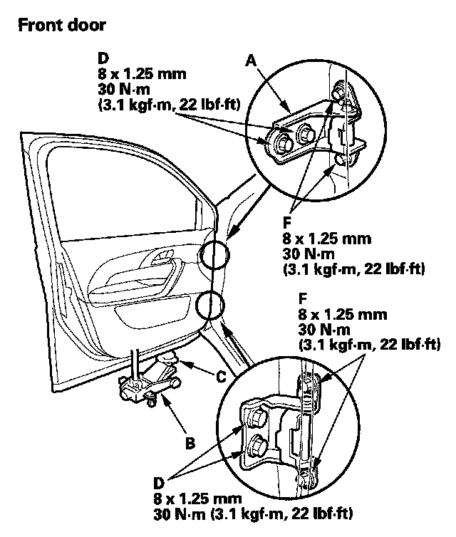
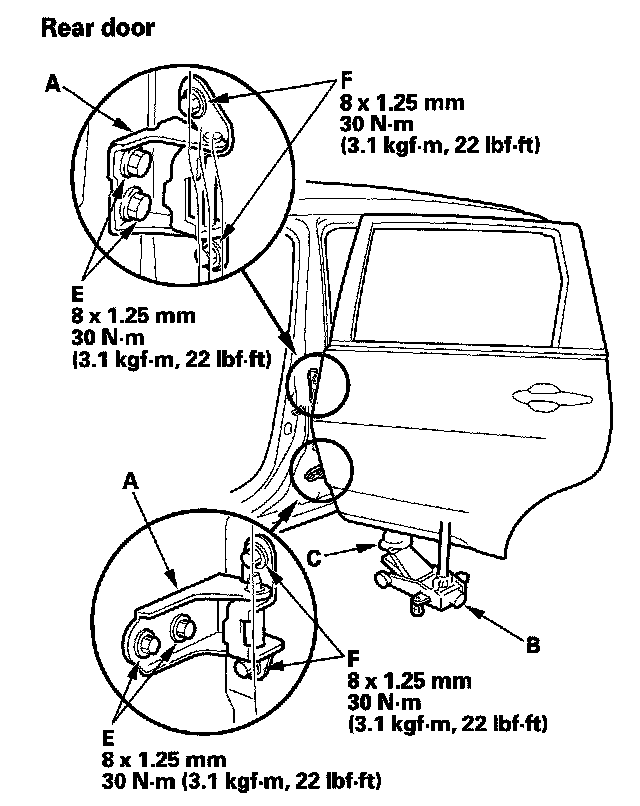
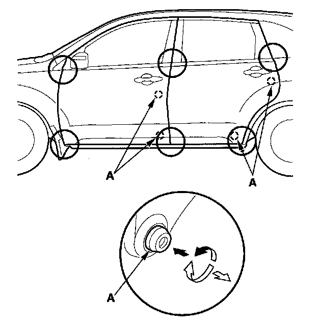

Front Door: Adjustments
Front and Rear Door Position AdjustmentNOTE: Check for a flush fit with the body, then check for equal gaps between the front, rear, and bottom door edges and the body. Check that the door and body edges are parallel.
1. Place the vehicle on a firm, level surface when adjusting the doors.


2. Adjust at the hinges (A):
- Pad a floor jack (B) with shop towels (C), then use the jack to support the door to prevent damage to the door while adjusting it.
- On the front door: Remove the front inner fender. Loosen the hinge mounting bolts (D) slightly, and move the door backward or forward, up or down as necessary to equalize the gaps.
- On the rear door: Loosen the hinge mounting bolts (E) slightly, and move the door backward or forward, up or down as necessary to equalize the gaps.
3. If necessary, replace the door mounting bolts with the adjusting bolts (P/N 90102-SFA-305) made specifically for door adjustment, then adjust at the door: Loosen the door mounting bolts (F) slightly, and move the door up or down as necessary to equalize the gaps, and move it in or out until it's flush with the body.

4. Check that the door and body edges are parallel. If necessary, adjust the door cushions (A) to make the rear of the doors flush with the body.
5. Apply touch-up paint to the hinge mounting bolts, and around the hinges.
6. Check for water leaks.